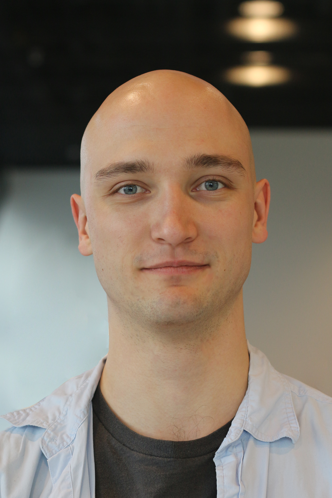

I study verified adaptation. Rather than yearn for a world where programs, architectures, and deployments hold still, I build hands-off programming languages, type systems, synthesis engines, and verifiers that permit systems to embrace the natural ebb and flow of software and hardware, while still providing strong guarantees about system behavior.
Conference Papers
|
MatchBox: A Semantic Foundation for Data Plane Portability
Distinguished Paper Award! PLDI. June 2026. 
|
|
Optimal Predicate Pushdown Synthesis
PLDI. June 2026.
|
|
Computing Precise Control Interface Specifications
OOPSLA. Oct 2024.
|
|
Kleene Algebra Modulo Theories
Distinguished Paper Award! PLDI. June 2022.
|
|
Dependently-Typed Data Plane Programming
POPL. January 2022.
|
|
Avenir: Managing Data Plane Heterogeneity via Control Plane Synthesis
NSDI. April 2021.
|
|
How to Avoid Making a Billion-Dollar Mistake: Type-Safe Data Plane Programming with SafeP4
ECOOP. July 2019.
|
|
Constructing Integer Matrices with Integer Eigenvalues
The Mathematical Scientist, UK. June 2016.
|
Other Publications
|
How I learned to stop worrying and love learned OS policies
HotOS. May 2025. |
|
P4Cub: A Little Language for Big Routers
CPP. Jan 2023.
|
|
Epistemic Semantics in Guarded String Models
SCiL. February 2021.
|
|
Injecting Finiteness to Prove Completeness for Finite Linear Temporal Logic
arXiv:2107.06045. July 2021.
|
Theses
|
Verified Configuration of Programmable Networks
Cornell University. December 2024. |
|
Infiniteness and Linear Temporal Logic
Pomona College. May 2017.
|
News
| May 26, 2025 | I'll be serving on the OOPSLA '26 PC! |
| November 21, 2024 | Successfully defended my dissertation! |
| November 1, 2024 | Started my postdoc @ UT Austin with Isil and Aditya |
| August 23, 2024 | The AEC for OOPSLA '24 awarded Capisce Functional, Resusable, and Available! |
| October 18, 2023 | Visited EPFL! Gave a talk about Avenir in Ed's group |
| January 20, 2023 | Co-chairing the new session previews track for POPL. Come see my talk on Relational & Automated Verification on Friday! |
| March 10, 2022 | I gave an invited talk on Avenir at Intel |
Blog Posts
Teaching
| Summer 2023 | Instructor | CS 3 at Jane Street AMP |
| Summer 2022 | Instructor | CS 3 at Jane Street AMP |
| Spring 2018 | TA | OOP and Data Structures at Cornell University |
| Fall 2017 | TA | OOP and Data Structures at Cornell University |
| Spring 2017 | TA | Database Systems at Pomona College |
| Fall 2016 | TA | Programming Languages at Pomona College |
| Spring 2016 | Head TA | Intro to CS at Pomona College |
| Fall 2015 | TA | Intro to CS at Pomona College |